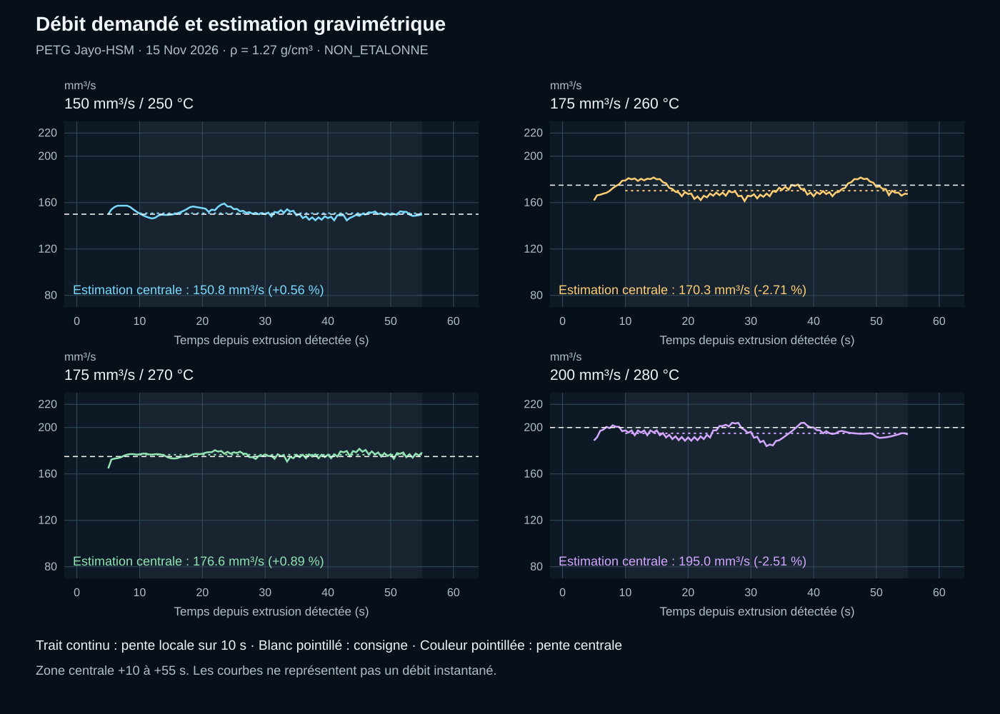
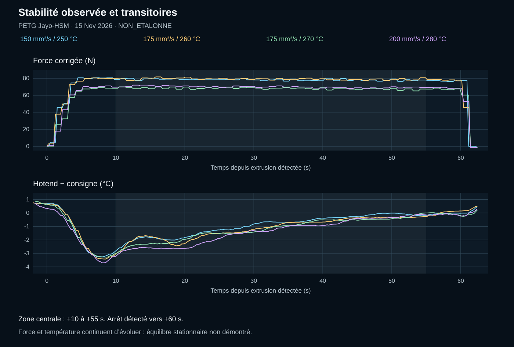

Performances thermiques
Capacité de chauffe, distribution des températures et stabilité lorsque le débit matière augmente.
Augmenter le débit matière tout en conservant la maîtrise du procédé.
Développement de systèmes d’extrusion polymère haute performance destinés à atteindre des débits matière nettement supérieurs, avec un travail centré sur les performances thermiques, l’effort d’extrusion, la stabilité du débit et la répétabilité du dépôt.

Présentation du projet
Le projet a dépassé la phase initiale de conception conceptuelle et se trouve désormais en développement actif de prototypes et en caractérisation expérimentale.
MYCNC3D développe des systèmes d’extrusion polymère haute performance destinés à augmenter fortement le débit matière tout en conservant la maîtrise du comportement thermique, de l’effort d’extrusion, de la stabilité du débit et de la qualité du dépôt.
Les recherches considèrent l’extrusion haut débit comme un problème global d’ingénierie du procédé. L’augmentation de la puissance de chauffe ou du diamètre de buse ne suffit pas : la capacité de fusion, le temps de séjour du polymère, la mécanique d’extrusion, la stabilité thermique et le débit matière soutenu doivent fonctionner ensemble dans une fenêtre procédé maîtrisée.
Les travaux actuels portent sur l’amélioration de l’architecture d’extrusion, l’instrumentation du procédé et l’établissement de conditions de fonctionnement répétables.
L’objectif n’est pas uniquement d’atteindre une valeur maximale de débit élevée, mais de maintenir un débit matière important de manière stable, mesurable et répétable.
Prestations d’ingénierie sur mesure
MYCNC3D propose dès maintenant des prestations de conception, de prototypage et de fabrication de hotends, d’extrudeurs et de composants d’extrusion personnalisés, sur étude de faisabilité et devis accepté.
Chaque projet commence par l’étude de votre application, des matériaux, des interfaces machine et des exigences de fonctionnement. Le périmètre de conception, de fabrication des prototypes et d’essais est défini avec vous selon la faisabilité du projet.
Ces prestations sur mesure sont distinctes du hotend haut débit propriétaire actuellement en développement. Celui-ci reste un prototype de R&D et ne constitue pas un produit de série validé.
Contactez-nous avec une présentation de votre besoin pour étudier sa faisabilité et demander un devis.
Pourquoi cet axe est important
Le débit matière constitue l’une des principales limites de productivité du FDM. Son augmentation peut réduire les temps de fabrication, permettre des géométries de dépôt plus importantes et rendre l’extrusion polymère plus pertinente pour des applications de plus grande échelle.
Mais l’augmentation du débit rend également plus critiques la qualité de fusion, la stabilité thermique, l’effort d’extrusion et la gestion thermique. MYCNC3D considère donc les performances d’extrusion comme un problème de maîtrise du procédé, et non comme la recherche d’une simple valeur maximale en mm³/s.
Axes de travail actuels
Capacité de chauffe, distribution des températures et stabilité lorsque le débit matière augmente.
Relations entre géométrie d’extrusion, temps de séjour, température du polymère et débit accessible.
Effort mécanique nécessaire pour transporter le filament à travers le système dans différentes conditions.
Débit soutenu, comportement en pression et régularité dans le temps plutôt que valeurs de pointe de courte durée.
Conversion du débit élevé en dépôt stable et exploitable sans perte excessive de maîtrise du procédé.
Méthodes d’essai instrumentées pour comparer les architectures et identifier les limites thermiques, mécaniques et d’écoulement.
Approche d’ingénierie
MYCNC3D développe le système d’extrusion par prototypage itératif et essais instrumentés. Les évolutions de conception sont évaluées à partir de paramètres mesurables tels que le débit matière, l’effort d’extrusion, la stabilité des températures et le comportement du dépôt.
Cette démarche permet de définir progressivement le domaine de fonctionnement de chaque architecture et de relier les performances d’extrusion à la plateforme technologique globale de MYCNC3D.
Résultats préliminaires


Les températures apparentes de surface dépendent de l’émissivité, de l’étalonnage de la caméra et des conditions de mesure. Elles ne démontrent pas la température du polymère. Aucune correspondance entre cette thermographie et l’un des quatre essais CSV ci-dessous n’a été confirmée.
Quatre essais instrumentés de PETG Jayo-HSM ont été enregistrés le 15 novembre 2026, avec deux filaments de 1,75 mm, une buse déclarée de 1,0 mm et une durée programmée de 60 s par essai.
Les débits ci-dessous sont des estimations gravimétriques obtenues par régression de la masse collectée entre 10 et 55 s après le début d’extrusion détecté, avec une densité déclarée de 1,27 g/cm³. Ils sont distincts des débits demandés. Les exports portent la mention NON_ETALONNE : les résultats sont préliminaires et leur incertitude totale n’est pas établie.
Débit estimé : 150.8 mm³/s
Écart à la consigne : +0.56 %
Force corrigée moyenne : 78.33 N
Débit estimé : 170.3 mm³/s
Écart à la consigne : -2.71 %
Force corrigée moyenne : 79.11 N
Débit estimé : 176.6 mm³/s
Écart à la consigne : +0.89 %
Force corrigée moyenne : 68.04 N
Débit estimé : 195.0 mm³/s
Écart à la consigne : -2.51 %
Force corrigée moyenne : 69.79 N


Les températures indiquées dans les titres sont les consignes. Les forces sont les moyennes corrigées de l’offset sur la même fenêtre. Les essais à 175 mm³/s montrent une force moyenne plus faible à 270 °C qu’à 260 °C ; cette observation reste limitée à ces deux essais. Les conditions thermiques diffèrent et un seul essai est disponible par condition. Ces mesures ne démontrent ni la répétabilité, ni la qualité du dépôt, ni une performance industrielle garantie.
État actuel
Le projet est en développement actif de prototypes et en caractérisation expérimentale. Les travaux actuels portent sur l’amélioration de l’architecture d’extrusion, l’instrumentation du procédé et l’établissement de conditions de fonctionnement répétables.
Le système reste une plateforme de recherche et développement et n’est pas actuellement présenté comme un produit de production commercial.
Prochain jalon
Le prochain jalon consiste à établir une méthodologie de validation répétable couvrant le débit matière soutenu, la stabilité thermique, l’effort d’extrusion et la qualité du dépôt dans des conditions de fonctionnement représentatives.
Le passage vers VALIDATION nécessitera des résultats répétables, des performances soutenues plutôt que de simples valeurs de pointe, un comportement thermique maîtrisé et une corrélation claire entre les conditions d’extrusion mesurées et la qualité réelle du dépôt.
Plateforme intégrée
L’objectif à long terme est d’intégrer les performances de dépôt matière avec le mouvement machine et les logiciels de fabrication, plutôt que de développer ces technologies de manière indépendante.
Collaboration
MYCNC3D est ouvert aux échanges avec des partenaires industriels, fournisseurs de matériaux, fabricants de composants, organismes de recherche et acteurs technologiques travaillant sur l’extrusion avancée et la fabrication additive.